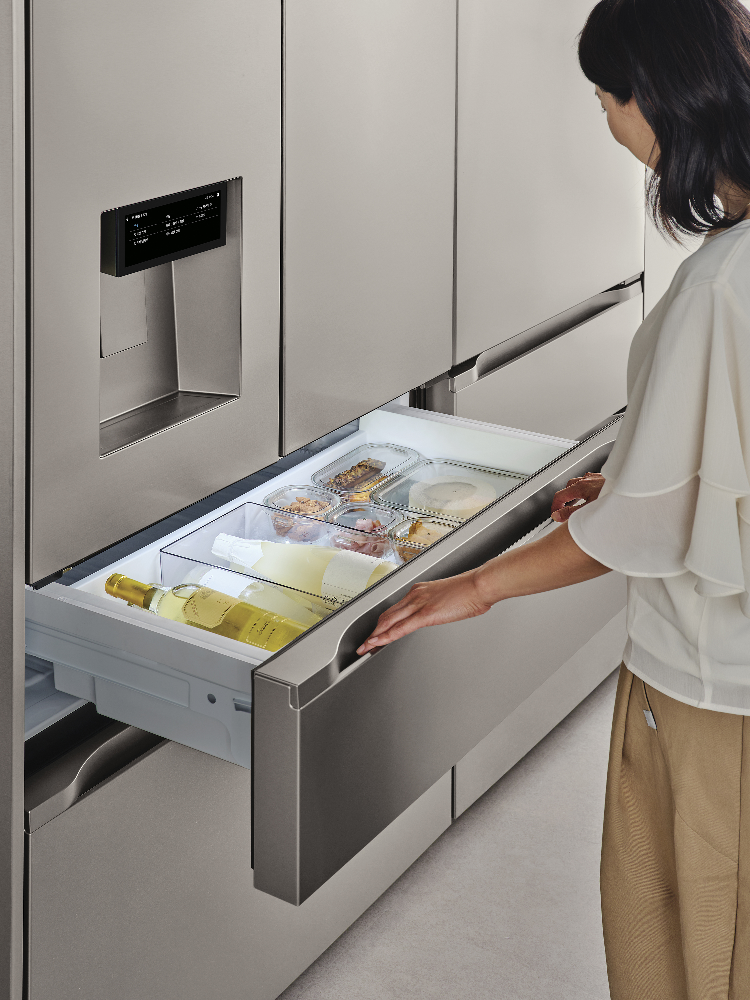

厨房智能硬件 · 竞品新品
LG 把冷冻室改成抽屉，让 AI 跟着备餐节奏调温
新款 STEM 冰箱将可变温抽屉、使用习惯学习和语音设定组合起来，把智能功能落到食材取放与分区储存。

10 月 26 日，LG 在韩国推出 Dios AI Objet Collection STEM 制冰净水冰箱的抽屉型新款。原有下部对开门结构改为上下抽屉：中层可在冷藏、冷冻之间切换，用户通过 ThinQ 应用选择 14 种食材储存模式；下层承担冷冻与自动制冰。
按照 LG 的介绍，AI 新鲜管理会学习使用时间与开门次数，在备餐前加强制冷；低使用时段则调整压缩机运行。语音功能可结合食材、预计存放时间推荐模式，经用户指定储存位置后执行设定。
这次升级同时涉及硬件形态和交互：抽屉打开后可从上方查看食材，减少向深处翻找。上述保鲜、节能效果来自厂商描述，公告未提供本报道可复核的独立测试结果。
LG 官方新闻稿｜STEM 抽屉型新品 · 2026-10-26IT时代网｜LG 新品报道及产品配图 · 2026-10-26 11:44时效：10 月 26 日新品；中文报道位于本次近 24 小时检索窗。